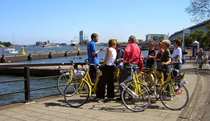

Extended program
React Amsterdam is not just a big conference. It is a social and cultural environment designed to fit React crowd in the way engineers like with an extra addition to you regular conference experience.
Community preparty
The day before the conference we connect local React community and international attendees in a nonformal setup. Are you a React developer from Amsterdam? Did you come to the city day prior to the event? Attending workshops and have no plans for an evening? Feel free to join preparty in the center of Amsterdam no matter have you ticket or not.
We'll list community pre-party locations closer to the event.
Afterparty

After the main conference program is over we have a 2 hours break. Use it wisely to recharge or have a meal at food trucks area or one of the restaurants nearby to get prepared for the React Party. This year organized in collaboration with some of Amsterdam Dance Event crew and other cultural foundations.
We are not going to unveil much in advance but just a small bit - the party will run in two completely different tracks and the fact React Amsterdam 2018 is Friday 13th provides us more opportunities to have fun.
Amsterdam exploration day
Amsterdam is beautiful, picturesque, amazing. This is what we hear sometimes from guests coming to the city. Explore this beauty on your own or together with new friends met at the conference. And we will try to be helpful there.
Bike rental and boat tours
Find discount codes in conference booklets. They will not save you money for a new Tesla but still nice to have.

Tour with local guides and meeting points
Feel free to join tour from the beginning or at one of meeting points. And even after the last one is over still check on React Amsterdam Slack. Nobody knows when that Saturday ends.